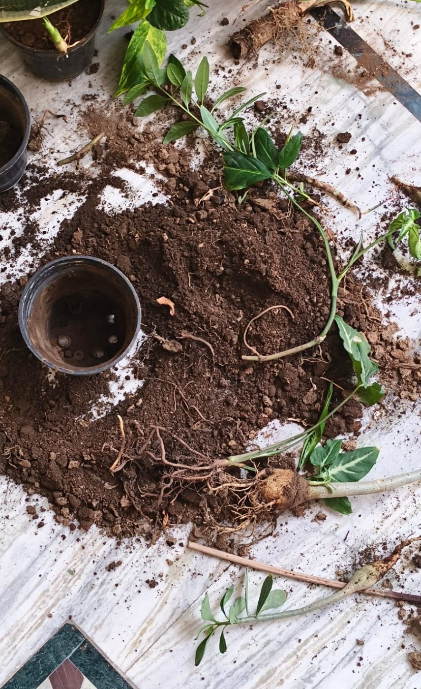

접수 조회
접수번호를 넣으면 시료가 지금 어느 단계에 있는지와 발송 예정일을 보여 줍니다.
접수번호 조회
분석 단계
| 단계 | 시작 | 하는 일 |
|---|---|---|
| 접수 | 0일째 | 봉지 이름 · 무게 확인, 접수번호 붙임 |
| 건조 | 1일째 | 40 ℃ 건조실에서 이틀 |
| 분쇄 | 3일째 | 부순 뒤 2 mm 체로 거름 |
| 분석 | 4일째 | 항목별 침출 · 측정 |
| 검토 | 6일째 | 표준 시료 값 대조, 다시 잴 항목 확인 |
| 발송 | 7일째 | 성적서와 시비 처방을 문자 · 우편으로 보냄 |

접수번호를 넣으면 시료가 지금 어느 단계에 있는지와 발송 예정일을 보여 줍니다.
| 단계 | 시작 | 하는 일 |
|---|---|---|
| 접수 | 0일째 | 봉지 이름 · 무게 확인, 접수번호 붙임 |
| 건조 | 1일째 | 40 ℃ 건조실에서 이틀 |
| 분쇄 | 3일째 | 부순 뒤 2 mm 체로 거름 |
| 분석 | 4일째 | 항목별 침출 · 측정 |
| 검토 | 6일째 | 표준 시료 값 대조, 다시 잴 항목 확인 |
| 발송 | 7일째 | 성적서와 시비 처방을 문자 · 우편으로 보냄 |
